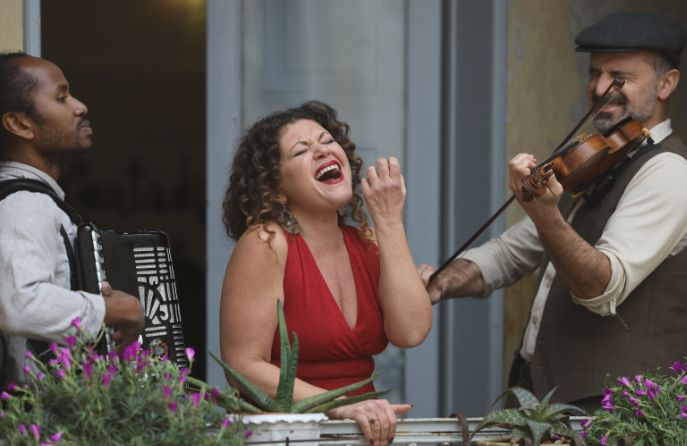
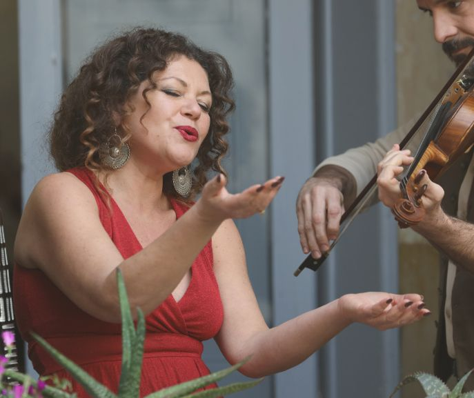

Le serenate sono una forma di musica "di strada" raffinata e popolare: pochi strumenti acustici, una voce protagonista e l'arte di fermarsi davanti a una casa, un balcone, un tavolo per cantare una dedica.
Nascono nei vicoli e nelle piazze del Sud e diventano il linguaggio universale dell'amore: una canzone al posto di un discorso, una melodia al posto di un biglietto.
Un repertorio di serenate napoletane, dette anche "di posteggia", molte nate tra fine '800 e i primi '900 tra salotti e cortili, tra teatri popolari e canzonieri urbani. Sono canzoni d'amore intense e coinvolgenti, capaci di parlare direttamente al cuore, per poi aprirsi progressivamente a una dimensione più luminosa e partecipata, ispirata alla tradizione musicale rom per raccontare emozioni semplici e universali.
La musica prende vita in una formula essenziale: la voce intensa e calda di Irene Lungo, napoletana verace e interprete di grande sensibilità, si intreccia con il violino di Marco Ghezzo e la fisarmonica di Bruno Galeone. Tre musicisti con solida esperienza internazionale.
L'evento può prevedere, su richiesta, la presenza di una voce narrante, interpretata da Giuseppe Semeraro, per alternare delicati momenti di poesie d'amore.
In base alle esigenze dell'evento, la formazione è modulabile e può includere altri musicisti.
Serenades are a refined yet popular form of "street" music: a few acoustic instruments, a leading voice, and the art of stopping in front of a house, a balcony, or a table to sing a dedication.
Born in the alleys and squares of Southern Italy, they became the universal language of love: a song instead of a speech, a melody instead of a written note.
A repertoire of Neapolitan serenades, also known as "posteggia" songs, many of which born between the late nineteenth and early twentieth centuries, among salons and courtyards, popular theatres and urban songbooks. These are intense and engaging love songs, capable of speaking directly to the heart, gradually opening into a brighter, more participatory dimension inspired by Romani musical tradition: listening becomes presence, sharing, celebration — telling simple and universal emotions.
The music comes to life in an essential format of strong presence: the intense and warm voice of Irene Lungo, an authentic Neapolitan singer and highly sensitive interpreter, intertwines with Marco Ghezzo's violin and Bruno Galeone's accordion. Three musicians with solid international experience.
Upon request, the event may also include a narrator, performed by Giuseppe Semeraro, alternating the music with delicate moments of love poetry.
Depending on the needs of the event, the ensemble is flexible and may include additional musicians.
Le "Serenate" si integrano con eleganza in contesti esclusivi e location d'eccellenza: dalla vigilia delle nozze con una serenata a sorpresa sotto un balcone, a un intermezzo durante la festa, fino a un set "su misura" tra i tavoli o in un punto dedicato, in dialogo con la regia dell'evento.
Alla vigilia del matrimonio le Serenate diventano un rituale di buon auspicio: un gesto antico da condividere con amici e famiglia, una promessa cantata.
Durante il matrimonio, un set acustico offre un cambio di ritmo elegante, crea attenzione e coinvolgimento, lasciando un ricordo autentico e duraturo, ben oltre qualsiasi effetto scenico.
"Serenades" integrate elegantly into exclusive settings and outstanding venues: from a surprise balcony serenade on the eve of a wedding, to a musical interlude during the celebration, to a tailor-made set among the tables or in a dedicated space, in dialogue with the event direction.
On the eve of the wedding, Serenades become a ritual of good fortune: an ancient gesture to share with friends and family, a promise sung aloud.
During the wedding, an acoustic set offers an elegant change of pace, creating attention and engagement, leaving an authentic and lasting memory — far beyond any scenic effect.

Cuore del repertorio sono antiche canzoni d'amore napoletane, da I' te vurria vasà (1900) a Nun t'affaccià! (1908), da Dicitencello vuje (1930) a Malafemmena (1951) e Indifferentemente (1963).
La scelta dei brani e l'energia del set possono essere calibrate sullo stile dell'evento e sui suoi momenti, mantenendo sempre una cifra acustica, curata e "di prossimità" dove l'amore — cantato — è protagonista.
At the heart of the repertoire are ancient Neapolitan love songs, from I' te vurria vasà (1900) to Nun t'affaccià! (1908), from Dicitencello vuje (1930) to Malafemmena (1951) and Indifferentemente (1963).
The selection of songs and the energy of the set can be tailored to the style and key moments of the event, always maintaining a refined, intimate acoustic identity where love — sung — takes center stage.

Un repertorio composto da antiche canzoni d'amore, pensato per creare atmosfera, emozionare e portare bellezza: la scelta ideale per ogni occasione in cui l'amore è protagonista!
| Durata | 1:30' |
| Amplificazione | Acustica e/o amplificazione leggera in base a spazio e numero ospiti |
| Formazione | Irene Lungo (voce), Marco Ghezzo (violino), Bruno Galeone (Fisa) – ampliabile |
- immediate emotional impact / minimal technical setup
- seamless integration with the wedding coordination / strong guest engagement
- a unique and memorable experience
- pre-wedding serenades
- wedding celebrations (in the main hall or among the tables)
A living, essential, and timeless tradition: Serenades transform any event into a unique experience, bringing emotion and beauty — the ideal choice for every occasion where love takes center stage.
| Duration | 1 hour, 30 minutes |
| Sets | Flexible sets: one or more moments distributed throughout the event |
| Sound | Acoustic and/or light amplification depending on the venue and number of guests |
| Line-up | Irene Lungo (vocals), Marco Ghezzo (violin), Bruno Galeone (accordion) |